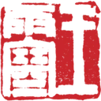
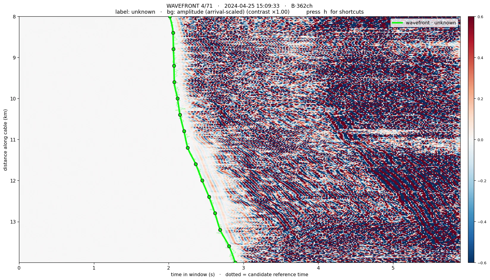
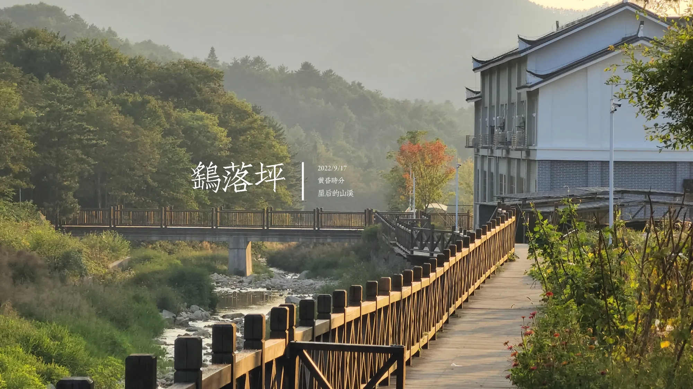

SeismoHub
A self-hosted, local-first literature hub for seismology: paper trackers, AI reading with paragraph-anchored citations, licence-aware PDF harvesting. One FastAPI process, one SQLite file.
GitHub ↗Fibre-optic seismology · ETH Zürich
“What is essential is invisible to the eyes.”
I photograph star trails. For work I study the part of the Earth nobody can see, by turning telecom cables into seismic arrays.
Long exposure, liveLong exposure, live
Shutter open 0:00. Trails 9° long: 36 min under a real sky.
Press and hold on the sky to expose faster.
The ridgeline is drawn from real ground motion. M 8.8 Kamchatka, 29 July 2025, recorded 8609 km away in Switzerland (SED, ETH Zürich). P and S: iasp91 times.
Scroll: under the horizonIJust under the surface


I’m a doctoral student in the Seismology & Wave Physics group at ETH Zürich, supervised by Andreas Fichtner.
My field is fibre-optic seismology: turning telecom cables into dense seismic arrays, on the seafloor and under cities. I also build open tools around that work, from earthquake detection on fibre data to a literature hub for seismology.
IIThe fibre
Distributed acoustic sensing (DAS) reads the strain along an optical fibre that is already in the ground. The cable drawn below runs between the Greek islands of Kefalonia and Ithaca: land, seafloor, land.
ClickTap below the fibre to start an earthquake. The curve it draws above the cable is what a DAS record looks like: the wave arrives first where the cable is closest.
An interrogator at one end of the cable sends laser pulses down a single glass fibre.
Tiny flaws in the glass scatter a little light back. Where the ground stretches or squeezes the fibre, the phase of that echo changes.
The arrival time of each echo tells where on the cable it came from. On this cable that gives a strain reading every 8.17 m: 1872 channels along 15.29 km of fibre.
A channel number is a distance along the fibre, not a place on the ground. Between the interrogator and the beach manhole this fibre is 7.32 km long; the ground under it is 6.44 km. Of the difference, 0.71 km is spare fibre stored at eight points, in coils of 16 to 172 m.
I find the coils with three signals: tap tests, earthquake amplitudes and passing vehicles. The method is packaged as das-channel-mapping-skill.
The fibre recorded as a DAS array from 24 April to 22 June 2024.
The cable stays at the surface. The earthquakes it records start kilometres below.
IIIThe fault
Each light is one earthquake. The counts are real; the arrangement is a drawing, not a map.
The Kefalonia Transform Fault breaks in earthquakes above magnitude 6 every 10 to 20 years. Its small earthquakes are poorly resolved by the stations on land.
For two months in 2024, a seafloor telecom cable between Kefalonia and Ithaca recorded them as DAS data. I scanned that record with a matched filter built from only five template events. The detections come in episodic swarms.
Preprint · 2026
Yuhan Wang, Men-Andrin Meier, Adonis Bogris, Christos Simos, Iraklis Simos, Nikolaos S. Melis, Andreas Fichtner · ESS Open Archive
doi:10.22541/essoar.15006791/v1 · code: yuhan-mfdas, yuhan_das_spectra, das_wavefront_picker · archive doi:10.5281/zenodo.20715241
IVDeeper
2026Journal article
Yuhan Wang, Adonis Bogris, Christos Simos, Iraklis Simos, Nikolaos S. Melis, Stavros Deligiannidis, Andreas Fichtner · Seismological Research Letters
The same cable in 2024: one integrated fibre measurement compared with the DAS channels beside it, for earthquakes, ocean waves and traffic.
doi:10.1785/0220260220 · code and data doi:10.5281/zenodo.20553635
2026Preprint
Yuhan Wang, Andreas Fichtner
How the curvature of a cable filters the wavefield it records, and what that means for laying out a deployment.
2026Data and code · co-author
Daniel C. Bowden, Lu Tian, Yuhan Wang, Krystyna T. Smolinski, Konstantinos Lentas, Nikolaos S. Melis, Adonis Bogris, Christos Simos, et al.
This started as my 2022 summer project: ambient-noise tomography and site amplification from roadside DAS, presented at the AGU Fall Meeting 2022.
2025Conference abstract
Yuhan Wang, Andreas Fichtner · EGU General Assembly 2025, Vienna
All open, on GitHub, in English and 中文
A self-hosted, local-first literature hub for seismology: paper trackers, AI reading with paragraph-anchored citations, licence-aware PDF harvesting. One FastAPI process, one SQLite file.
GitHub ↗
Spectra of seafloor DAS: noise PSD and PPSD, earthquake spectra by magnitude, noise against ERA5 wind and waves.
GitHub ↗
STA/LTA wavefront detection and interactive picking on raw DAS waterfalls, with bad-channel rejection.
GitHub ↗
A Claude Code skill that finds the excess fibre along a cable and delivers the channel map with uncertainties.
GitHub ↗A public, read-only daily snapshot: new seismology and wave-physics papers on one searchable page.
Open the site ↗Verified, licence-aware full-text PDFs for a reading list, from about twenty open channels.
GitHub ↗Matched-filter earthquake detection for the Kefalonia seafloor cable: templates, stacked cross-correlation, MAD triggering, magnitudes.
GitHub ↗In your browser
Six experiments on one finite-difference solver: a playground, arrays and DAS, time reversal, tomography, ambient noise and elastic waves.
Open the Wave Lab →
Workshop · 30–31 July 2026 · ETH Zürich & online
A workshop on multi-scale tomography of the Earth. I co-organised it with Andreas Fichtner; the Seismology & Wave Physics group hosted it.
Visit the workshop site ↗Up again, into the night.


0 mBack at the surface
Night skies and star trails, landscapes, postcards. I used to paint, too: Chinese ink wash and oil.
About fibre-optic seismology, DAS data, the tools, or a photograph.
My address is on my ETH profile Seismology & Wave Physics group · Institute of Geophysics · ETH Zürich